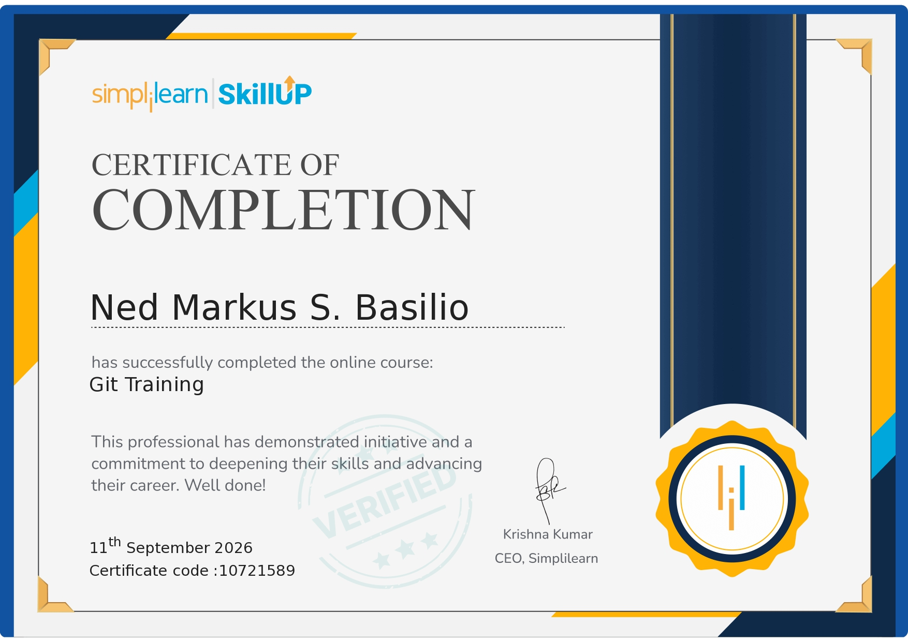
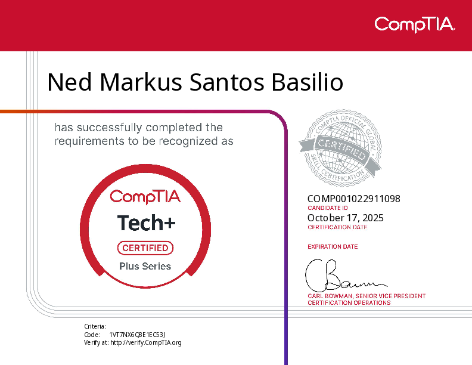
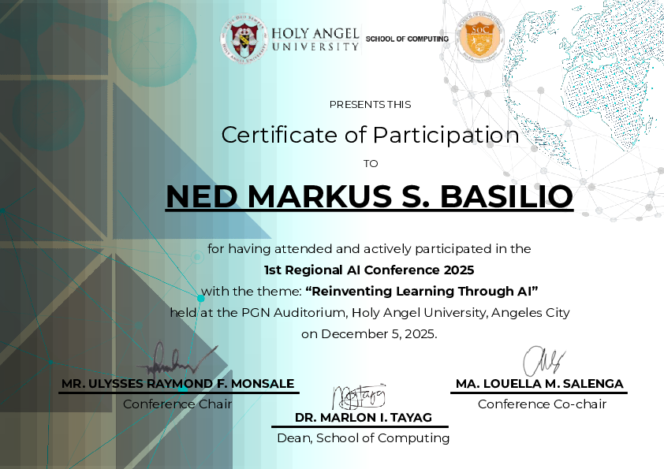

Brief Introduction
I am a learning developer who believes that great programs start with great planning. I build professional, minimal, and well-structured web experiences with a focus on clean design and maintainable code.
Hello, I’m Ned.
I am a learning developer who believes that great programs start with great planning. I build professional, minimal, and well-structured web experiences with a focus on clean design and maintainable code.
Bachelor of Science in Computer Engineering
2025 - Present
Academic Track: STEM Strand
2022 - 2025
Junior High School Diploma
2019 - 2022


A comprehensive git training course delivered by simplilearn.
View Full CertificateA baseline understanding of IT infrastructure, hardware, software, security, and basic troubleshooting.
View Full CertificateThis seminar discussed about the significance of the integration and relevance of AI.
View Full CertificateCreating user-friendly and efficient software through programming languages, frameworks, and best practices.
Understanding frontend and backend development to contribute to the complete web development process.
I value simplicity, maintainability, planning, and user-centered design.
Mastering Java, web development, UI/UX design, and practical project development.
Explored C, Python, and the fundamentals of programming through small projects.
Learning performance optimization, database optimization, and clean, scalable coding practices.
I am a learning developer who believes that great programs start with great planning. I build professional, minimal, and well-structured web experiences with a focus on clean design and maintainable code.
I am a 2nd Year Bachelor of Science in Computer Engineering student at Holy Angel University. I enjoy coding, solving problems, and continually improving my skills through practical projects.
My design approach is professional, minimalistic, and semi-futuristic. It follows a tonal color approach that uses one primary color across different shades to keep each interface cohesive.
Bachelor of Science in Computer Engineering
2025 - Present
Academic Track: STEM Strand
2022 - 2025
Junior High School Diploma
2019 - 2022


A comprehensive git training course delivered by simplilearn.
View Full Certificate
A baseline understanding of IT infrastructure, hardware, software, security, and basic troubleshooting.
View Full Certificate
This seminar discussed about the significance of the integration and relevance of AI.
View Full CertificateAs a full-time digital citizen, I value the convenience of what software has given to us in the past years. I am interested in learning about software development, including programming languages, frameworks, and best practices. I want to be able to create software that is not only functional but also user-friendly and efficient.
I am interested in creating user experiences through thoughtful frontend design and backend architectures. I enjoy exploring how different technologies can work together to solve complex problems efficiently. Furthermore, I want to know both sides (Frontend and Backend) of web development to be able to fully understand and contribute to the entire development process.
My development philosophy centers on simplicity, maintainability, and user-centric design. I believe that clean, well-documented code is not just a professional courtesy but a fundamental aspect of sustainable software development. I advocate for iterative development, continuous learning, and building solutions that prioritize both functionality and elegance.
As college arrived, I was introducted to more advanced programming concepts and languages. I am currently focusing on mastering Java, exploring web development with HTML, CSS, and JavaScript, and learning about UI/UX design principles. I am also working on personal projects to apply my knowledge and gain practical experience.
As college was slowly approaching, I began to explore programming languages. I started with learning C and Python, gradually building small projects and learning the fundamentals of coding through coding tutorials on YouTube.
As a developer, it is my upmost priority to create efficient and optimized code. I am interested in learning about performance optimization techniques, database optimization, and best practices for writing clean and maintainable code. I want to ensure that the applications I build are not only functional but also performant and scalable.